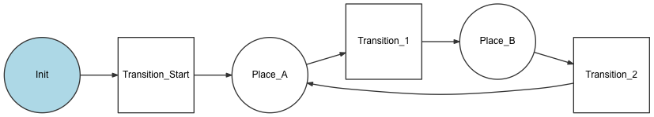

Workflow ¶
Using the Workflow component inside a Symfony application requires knowing first some basic theory and concepts about workflows and state machines. Read this article for a quick overview.
Installation ¶
In applications using Symfony Flex, run this command to install the workflow feature before using it:
1 |
$ composer require symfony/workflow
|
Configuration ¶
To see all configuration options, if you are using the component inside a Symfony project run this command:
1 |
$ php bin/console config:dump-reference framework workflows
|
Creating a Workflow ¶
A workflow is a process or a lifecycle that your objects go through. Each step or stage in the process is called a place. You also define transitions, which describe the action needed to get from one place to another.
A set of places and transitions creates a definition. A workflow needs
a Definition and a way to write the states to the objects (i.e. an
instance of a MarkingStoreInterface.)
Consider the following example for a blog post. A post can have these places:
draft, reviewed, rejected, published. You could define the workflow as
follows:
1 2 3 4 5 6 7 8 9 10 11 12 13 14 15 16 17 18 19 20 21 22 23 24 25 26 27 28 |
# config/packages/workflow.yaml
framework:
workflows:
blog_publishing:
type: 'workflow' # or 'state_machine'
audit_trail:
enabled: true
marking_store:
type: 'method'
property: 'currentPlace'
supports:
- App\Entity\BlogPost
initial_marking: draft
places:
- draft
- reviewed
- rejected
- published
transitions:
to_review:
from: draft
to: reviewed
publish:
from: reviewed
to: published
reject:
from: reviewed
to: rejected
|
Tip
If you are creating your first workflows, consider using the workflow:dump
command to debug the workflow contents.
Tip
You can use PHP constants in YAML files via the !php/const notation.
E.g. you can use !php/const App\Entity\BlogPost::STATE_DRAFT instead of
'draft' or !php/const App\Entity\BlogPost::TRANSITION_TO_REVIEW
instead of 'to_review'.
The configured property will be used via its implemented getter/setter methods by the marking store:
1 2 3 4 5 6 7 8 9 10 11 12 13 14 15 16 17 18 19 20 21 |
// src/Entity/BlogPost.php
namespace App\Entity;
class BlogPost
{
// the configured marking store property must be declared
private $currentPlace;
private $title;
private $content;
// getter/setter methods must exist for property access by the marking store
public function getCurrentPlace()
{
return $this->currentPlace;
}
public function setCurrentPlace($currentPlace, $context = [])
{
$this->currentPlace = $currentPlace;
}
}
|
Note
The marking store type could be "multiple_state" or "single_state". A single state marking store does not support a model being on multiple places at the same time. This means a "workflow" must use a "multiple_state" marking store and a "state_machine" must use a "single_state" marking store. Symfony configures the marking store according to the "type" by default, so it's preferable to not configure it.
A single state marking store uses a string to store the data. A multiple
state marking store uses an array to store the data. If no state marking
store is defined you have to return null in both cases (e.g. the above
example should define a return type like App\Entity\BlogPost::getCurrentPlace(): ?array
or like App\Entity\BlogPost::getCurrentPlace(): ?string).
Tip
The marking_store.type (the default value depends on the type value)
and property (default value ['marking']) attributes of the
marking_store option are optional. If omitted, their default values will
be used. It's highly recommended to use the default value.
Tip
Setting the audit_trail.enabled option to true makes the application
generate detailed log messages for the workflow activity.
With this workflow named blog_publishing, you can get help to decide
what actions are allowed on a blog post:
1 2 3 4 5 6 7 8 9 10 11 12 13 14 15 16 17 18 19 20 |
use App\Entity\BlogPost;
use Symfony\Component\Workflow\Exception\LogicException;
$post = new BlogPost();
$workflow = $this->container->get('workflow.blog_publishing');
$workflow->can($post, 'publish'); // False
$workflow->can($post, 'to_review'); // True
// Update the currentState on the post
try {
$workflow->apply($post, 'to_review');
} catch (LogicException $exception) {
// ...
}
// See all the available transitions for the post in the current state
$transitions = $workflow->getEnabledTransitions($post);
// See a specific available transition for the post in the current state
$transition = $workflow->getEnabledTransition($post, 'publish');
|
Accessing the Workflow in a Class ¶
You can use the workflow inside a class by using
service autowiring and using
camelCased workflow name + Workflow as parameter name. If it is a state
machine type, use camelCased workflow name + StateMachine:
1 2 3 4 5 6 7 8 9 10 11 12 13 14 15 16 17 18 19 20 21 22 |
use App\Entity\BlogPost;
use Symfony\Component\Workflow\WorkflowInterface;
class MyClass
{
public function __construct(
// Symfony will inject the 'blog_publishing' workflow configured before
private WorkflowInterface $blogPublishingWorkflow,
) {
}
public function toReview(BlogPost $post)
{
// Update the currentState on the post
try {
$this->blogPublishingWorkflow->apply($post, 'to_review');
} catch (LogicException $exception) {
// ...
}
// ...
}
}
|
Workflows can also be injected thanks to their name and the Target attribute:
1 2 3 4 5 6 7 8 9 10 11 12 13 14 |
use App\Entity\BlogPost;
use Symfony\Component\DependencyInjection\Attribute\Target;
use Symfony\Component\Workflow\WorkflowInterface;
class MyClass
{
public function __construct(
#[Target('blog_publishing')]
private WorkflowInterface $workflow
) {
}
// ...
}
|
This allows you to decorrelate the argument name of any implementation name.
6.2
All workflows and state machines services are tagged since in Symfony 6.2.
6.3
Injecting a workflow with only its name and Target was introduced in Symfony 6.3.
Tip
If you want to retrieve all workflows, for documentation purposes for example, you can inject all services with the following tag:
workflow: all workflows and all state machine;workflow.workflow: all workflows;workflow.state_machine: all state machines.
Tip
You can find the list of available workflow services with the
php bin/console debug:autowiring workflow command.
Using Events ¶
To make your workflows more flexible, you can construct the Workflow
object with an EventDispatcher. You can now create event listeners to
block transitions (i.e. depending on the data in the blog post) and do
additional actions when a workflow operation happened (e.g. sending
announcements).
Each step has three events that are fired in order:
- An event for every workflow;
- An event for the workflow concerned;
- An event for the workflow concerned with the specific transition or place name.
When a state transition is initiated, the events are dispatched in the following order:
workflow.guard-
Validate whether the transition is blocked or not (see guard events and blocking transitions).
The three events being dispatched are:
workflow.guardworkflow.[workflow name].guardworkflow.[workflow name].guard.[transition name]
workflow.leave-
The subject is about to leave a place.
The three events being dispatched are:
workflow.leaveworkflow.[workflow name].leaveworkflow.[workflow name].leave.[place name]
workflow.transition-
The subject is going through this transition.
The three events being dispatched are:
workflow.transitionworkflow.[workflow name].transitionworkflow.[workflow name].transition.[transition name]
workflow.enter-
The subject is about to enter a new place. This event is triggered right before the subject places are updated, which means that the marking of the subject is not yet updated with the new places.
The three events being dispatched are:
workflow.enterworkflow.[workflow name].enterworkflow.[workflow name].enter.[place name]
workflow.entered-
The subject has entered in the places and the marking is updated.
The three events being dispatched are:
workflow.enteredworkflow.[workflow name].enteredworkflow.[workflow name].entered.[place name]
workflow.completed-
The object has completed this transition.
The three events being dispatched are:
workflow.completedworkflow.[workflow name].completedworkflow.[workflow name].completed.[transition name]
workflow.announce-
Triggered for each transition that now is accessible for the subject.
The three events being dispatched are:
workflow.announceworkflow.[workflow name].announceworkflow.[workflow name].announce.[transition name]
After a transition is applied, the announce event tests for all available transitions. That will trigger all guard events once more, which could impact performance if they include intensive CPU or database workloads.
If you don't need the announce event, disable it using the context:
1
$workflow->apply($subject, $transitionName, [Workflow::DISABLE_ANNOUNCE_EVENT => true]);
The context is accessible in all events except for the workflow.guard events:
1 2 3 4 5 6 |
// $context must be an array
$context = ['context_key' => 'context_value'];
$workflow->apply($subject, $transitionName, $context);
// in an event listener (workflow.guard events)
$context = $event->getContext(); // returns ['context']
|
Note
The leaving and entering events are triggered even for transitions that stay in the same place.
Note
If you initialize the marking by calling $workflow->getMarking($object);,
then the workflow.[workflow_name].entered.[initial_place_name] event will
be called with the default context (Workflow::DEFAULT_INITIAL_CONTEXT).
Here is an example of how to enable logging for every time a "blog_publishing" workflow leaves a place:
1 2 3 4 5 6 7 8 9 10 11 12 13 14 15 16 17 18 19 20 21 22 23 24 25 26 27 28 29 30 31 32 |
// src/App/EventSubscriber/WorkflowLoggerSubscriber.php
namespace App\EventSubscriber;
use Psr\Log\LoggerInterface;
use Symfony\Component\EventDispatcher\EventSubscriberInterface;
use Symfony\Component\Workflow\Event\Event;
class WorkflowLoggerSubscriber implements EventSubscriberInterface
{
public function __construct(
private LoggerInterface $logger,
) {
}
public function onLeave(Event $event)
{
$this->logger->alert(sprintf(
'Blog post (id: "%s") performed transition "%s" from "%s" to "%s"',
$event->getSubject()->getId(),
$event->getTransition()->getName(),
implode(', ', array_keys($event->getMarking()->getPlaces())),
implode(', ', $event->getTransition()->getTos())
));
}
public static function getSubscribedEvents()
{
return [
'workflow.blog_publishing.leave' => 'onLeave',
];
}
}
|
If some listeners update the context during a transition, you can retrieve it via the marking:
1 2 3 4 |
$marking = $workflow->apply($post, 'to_review');
// contains the new value
$marking->getContext();
|
Guard Events ¶
There are special types of events called "Guard events". Their event listeners
are invoked every time a call to Workflow::can(), Workflow::apply() or
Workflow::getEnabledTransitions() is executed. With the guard events you may
add custom logic to decide which transitions should be blocked or not. Here is a
list of the guard event names.
workflow.guardworkflow.[workflow name].guardworkflow.[workflow name].guard.[transition name]
This example stops any blog post being transitioned to "reviewed" if it is missing a title:
1 2 3 4 5 6 7 8 9 10 11 12 13 14 15 16 17 18 19 20 21 22 23 24 25 26 27 |
// src/App/EventSubscriber/BlogPostReviewSubscriber.php
namespace App\EventSubscriber;
use App\Entity\BlogPost;
use Symfony\Component\EventDispatcher\EventSubscriberInterface;
use Symfony\Component\Workflow\Event\GuardEvent;
class BlogPostReviewSubscriber implements EventSubscriberInterface
{
public function guardReview(GuardEvent $event)
{
/** @var BlogPost $post */
$post = $event->getSubject();
$title = $post->title;
if (empty($title)) {
$event->setBlocked(true, 'This blog post cannot be marked as reviewed because it has no title.');
}
}
public static function getSubscribedEvents()
{
return [
'workflow.blog_publishing.guard.to_review' => ['guardReview'],
];
}
}
|
Choosing which Events to Dispatch ¶
If you prefer to control which events are fired when performing each transition,
use the events_to_dispatch configuration option. This option does not apply
to Guard events, which are always fired:
1 2 3 4 5 6 7 8 9 10 11 |
# config/packages/workflow.yaml
framework:
workflows:
blog_publishing:
# you can pass one or more event names
events_to_dispatch: ['workflow.leave', 'workflow.completed']
# pass an empty array to not dispatch any event
events_to_dispatch: []
# ...
|
You can also disable a specific event from being fired when applying a transition:
1 2 3 4 5 6 7 8 9 10 11 12 13 14 15 |
use App\Entity\BlogPost;
use Symfony\Component\Workflow\Exception\LogicException;
$post = new BlogPost();
$workflow = $this->container->get('workflow.blog_publishing');
try {
$workflow->apply($post, 'to_review', [
Workflow::DISABLE_ANNOUNCE_EVENT => true,
Workflow::DISABLE_LEAVE_EVENT => true,
]);
} catch (LogicException $exception) {
// ...
}
|
Disabling an event for a specific transition will take precedence over any
events specified in the workflow configuration. In the above example the
workflow.leave event will not be fired, even if it has been specified as an
event to be dispatched for all transitions in the workflow configuration.
These are all the available constants:
Workflow::DISABLE_LEAVE_EVENTWorkflow::DISABLE_TRANSITION_EVENTWorkflow::DISABLE_ENTER_EVENTWorkflow::DISABLE_ENTERED_EVENTWorkflow::DISABLE_COMPLETED_EVENT
Event Methods ¶
Each workflow event is an instance of Event. This means that each event has access to the following information:
- getMarking()
- Returns the Marking of the workflow.
- getSubject()
- Returns the object that dispatches the event.
- getTransition()
- Returns the Transition that dispatches the event.
- getWorkflowName()
- Returns a string with the name of the workflow that triggered the event.
- getMetadata()
- Returns a metadata.
For Guard Events, there is an extended GuardEvent class. This class has these additional methods:
- isBlocked()
- Returns if transition is blocked.
- setBlocked()
- Sets the blocked value.
- getTransitionBlockerList()
- Returns the event TransitionBlockerList. See blocking transitions.
- addTransitionBlocker()
- Add a TransitionBlocker instance.
Blocking Transitions ¶
The execution of the workflow can be controlled by calling custom logic to decide if the current transition is blocked or allowed before applying it. This feature is provided by "guards", which can be used in two ways.
First, you can listen to the guard events.
Alternatively, you can define a guard configuration option for the
transition. The value of this option is any valid expression created with the
ExpressionLanguage component:
1 2 3 4 5 6 7 8 9 10 11 12 13 14 15 16 17 18 19 20 21 |
# config/packages/workflow.yaml
framework:
workflows:
blog_publishing:
# previous configuration
transitions:
to_review:
# the transition is allowed only if the current user has the ROLE_REVIEWER role.
guard: "is_granted('ROLE_REVIEWER')"
from: draft
to: reviewed
publish:
# or "is_anonymous", "is_remember_me", "is_fully_authenticated", "is_granted", "is_valid"
guard: "is_authenticated"
from: reviewed
to: published
reject:
# or any valid expression language with "subject" referring to the supported object
guard: "is_granted('ROLE_ADMIN') and subject.isRejectable()"
from: reviewed
to: rejected
|
You can also use transition blockers to block and return a user-friendly error message when you stop a transition from happening. In the example we get this message from the Event's metadata, giving you a central place to manage the text.
This example has been simplified; in production you may prefer to use the Translation component to manage messages in one place:
1 2 3 4 5 6 7 8 9 10 11 12 13 14 15 16 17 18 19 20 21 22 23 24 25 26 27 28 29 30 31 |
// src/App/EventSubscriber/BlogPostPublishSubscriber.php
namespace App\EventSubscriber;
use Symfony\Component\EventDispatcher\EventSubscriberInterface;
use Symfony\Component\Workflow\Event\GuardEvent;
use Symfony\Component\Workflow\TransitionBlocker;
class BlogPostPublishSubscriber implements EventSubscriberInterface
{
public function guardPublish(GuardEvent $event)
{
$eventTransition = $event->getTransition();
$hourLimit = $event->getMetadata('hour_limit', $eventTransition);
if (date('H') <= $hourLimit) {
return;
}
// Block the transition "publish" if it is more than 8 PM
// with the message for end user
$explanation = $event->getMetadata('explanation', $eventTransition);
$event->addTransitionBlocker(new TransitionBlocker($explanation , '0'));
}
public static function getSubscribedEvents()
{
return [
'workflow.blog_publishing.guard.publish' => ['guardPublish'],
];
}
}
|
Usage in Twig ¶
Symfony defines several Twig functions to manage workflows and reduce the need of domain logic in your templates:
workflow_can()-
Returns
trueif the given object can make the given transition. workflow_transitions()- Returns an array with all the transitions enabled for the given object.
workflow_transition()- Returns a specific transition enabled for the given object and transition name.
workflow_marked_places()- Returns an array with the place names of the given marking.
workflow_has_marked_place()-
Returns
trueif the marking of the given object has the given state. workflow_transition_blockers()- Returns TransitionBlockerList for the given transition.
The following example shows these functions in action:
1 2 3 4 5 6 7 8 9 10 11 12 13 14 15 16 17 18 19 20 21 22 23 24 25 26 27 28 29 30 31 32 |
<h3>Actions on Blog Post</h3>
{% if workflow_can(post, 'publish') %}
<a href="...">Publish</a>
{% endif %}
{% if workflow_can(post, 'to_review') %}
<a href="...">Submit to review</a>
{% endif %}
{% if workflow_can(post, 'reject') %}
<a href="...">Reject</a>
{% endif %}
{# Or loop through the enabled transitions #}
{% for transition in workflow_transitions(post) %}
<a href="...">{{ transition.name }}</a>
{% else %}
No actions available.
{% endfor %}
{# Check if the object is in some specific place #}
{% if workflow_has_marked_place(post, 'reviewed') %}
<p>This post is ready for review.</p>
{% endif %}
{# Check if some place has been marked on the object #}
{% if 'reviewed' in workflow_marked_places(post) %}
<span class="label">Reviewed</span>
{% endif %}
{# Loop through the transition blockers #}
{% for blocker in workflow_transition_blockers(post, 'publish') %}
<span class="error">{{ blocker.message }}</span>
{% endfor %}
|
Storing Metadata ¶
In case you need it, you can store arbitrary metadata in workflows, their
places, and their transitions using the metadata option. This metadata can
be only the title of the workflow or very complex objects:
1 2 3 4 5 6 7 8 9 10 11 12 13 14 15 16 17 18 19 20 21 22 23 24 |
# config/packages/workflow.yaml
framework:
workflows:
blog_publishing:
metadata:
title: 'Blog Publishing Workflow'
# ...
places:
draft:
metadata:
max_num_of_words: 500
# ...
transitions:
to_review:
from: draft
to: review
metadata:
priority: 0.5
publish:
from: reviewed
to: published
metadata:
hour_limit: 20
explanation: 'You can not publish after 8 PM.'
|
Then you can access this metadata in your controller as follows:
1 2 3 4 5 6 7 8 9 10 11 12 13 14 15 16 17 18 19 20 21 22 23 24 25 |
// src/App/Controller/BlogPostController.php
use App\Entity\BlogPost;
use Symfony\Component\Workflow\WorkflowInterface;
// ...
public function myAction(WorkflowInterface $blogPublishingWorkflow, BlogPost $post)
{
$title = $blogPublishingWorkflow
->getMetadataStore()
->getWorkflowMetadata()['title'] ?? 'Default title'
;
$maxNumOfWords = $blogPublishingWorkflow
->getMetadataStore()
->getPlaceMetadata('draft')['max_num_of_words'] ?? 500
;
$aTransition = $blogPublishingWorkflow->getDefinition()->getTransitions()[0];
$priority = $blogPublishingWorkflow
->getMetadataStore()
->getTransitionMetadata($aTransition)['priority'] ?? 0
;
// ...
}
|
There is a getMetadata() method that works with all kinds of metadata:
1 2 3 4 5 6 7 8 |
// get "workflow metadata" passing the metadata key as argument
$title = $workflow->getMetadataStore()->getMetadata('title');
// get "place metadata" passing the metadata key as the first argument and the place name as the second argument
$maxNumOfWords = $workflow->getMetadataStore()->getMetadata('max_num_of_words', 'draft');
// get "transition metadata" passing the metadata key as the first argument and a Transition object as the second argument
$priority = $workflow->getMetadataStore()->getMetadata('priority', $aTransition);
|
In a flash message in your controller:
1 2 3 4 5 |
// $transition = ...; (an instance of Transition)
// $workflow is a Workflow instance retrieved from the Registry or injected directly (see above)
$title = $workflow->getMetadataStore()->getMetadata('title', $transition);
$this->addFlash('info', "You have successfully applied the transition with title: '$title'");
|
Metadata can also be accessed in a Listener, from the Event object.
In Twig templates, metadata is available via the workflow_metadata() function:
1 2 3 4 5 6 7 8 9 10 11 12 13 14 15 16 17 18 19 20 21 22 23 24 25 26 27 28 29 30 31 32 33 34 35 36 |
<h2>Metadata of Blog Post</h2>
<p>
<strong>Workflow</strong>:<br>
<code>{{ workflow_metadata(blog_post, 'title') }}</code>
</p>
<p>
<strong>Current place(s)</strong>
<ul>
{% for place in workflow_marked_places(blog_post) %}
<li>
{{ place }}:
<code>{{ workflow_metadata(blog_post, 'max_num_of_words', place) ?: 'Unlimited'}}</code>
</li>
{% endfor %}
</ul>
</p>
<p>
<strong>Enabled transition(s)</strong>
<ul>
{% for transition in workflow_transitions(blog_post) %}
<li>
{{ transition.name }}:
<code>{{ workflow_metadata(blog_post, 'priority', transition) ?: 0 }}</code>
</li>
{% endfor %}
</ul>
</p>
<p>
<strong>to_review Priority</strong>
<ul>
<li>
to_review:
<code>{{ workflow_metadata(blog_post, 'priority', workflow_transition(blog_post, 'to_review')) }}</code>
</li>
</ul>
</p>
|